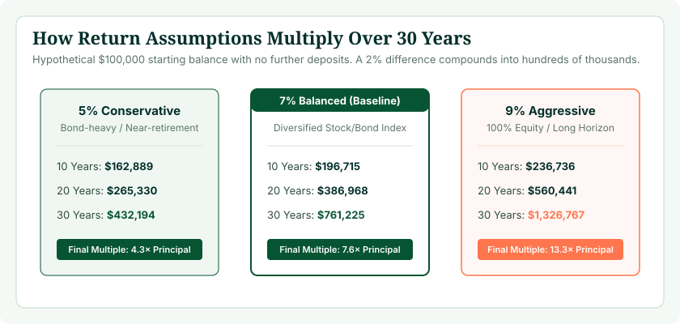
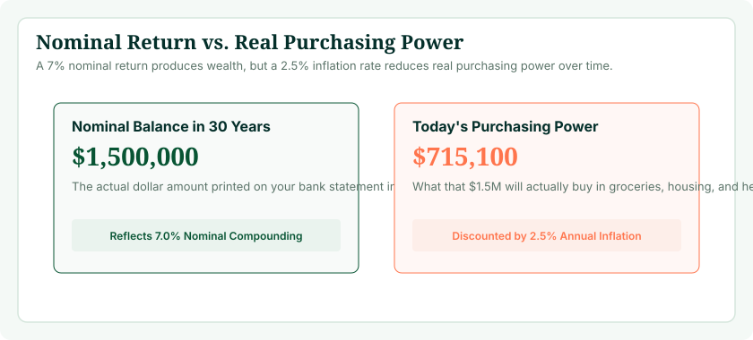

When modeling your future retirement savings, the single most sensitive—and most frequently misunderstood—variable is your assumed annual rate of return. While your current age, salary, and savings percentage are objective facts today, your future investment return is an assumption. Setting that number too high creates a false sense of security, encouraging you to save too little. Setting it unrealistically low can cause needless panic or lead to excessive sacrifices during your working years.
To see how different return assumptions transform your personal nest egg, use our interactive 401(k) Calculator. By testing conservative (5%), moderate (7%), and aggressive (9%) scenarios against your actual salary and contribution numbers, you can stress-test your retirement plan across realistic market environments.
The Quick Rule of Thumb: 5%, 7%, and 9%
- 5% (Conservative): Best for pre-retirees within 10 years of retirement, risk-averse investors holding 40%+ bonds, or when calculating in real (inflation-adjusted) purchasing power.
- 7% (Moderate Baseline): The industry-standard default for long-term multi-decade projections. Reflects a balanced portfolio of 70% to 80% equities and 20% to 30% bonds before subtracting inflation.
- 9% (Aggressive / Equity-Heavy): Suitable only for early-career workers (ages 20–35) with 25+ years of accumulation runway holding 90% to 100% low-cost stock index funds.
Why the Rate of Return Assumption Is So Critical
In mathematics, compound interest is an exponential function: ( A = P(1 + r)^t ). Because the interest rate ( r ) sits in the base of an exponential equation, small changes in the return percentage produce staggering divergence over multi-decade time horizons.
Consider an investor contributing $10,000 per year over a 30-year career. Look at how a 2% change in assumed return reshapes their eventual nest egg:
- At 5% return: The portfolio reaches approximately $664,400.
- At 7% return: The portfolio reaches approximately $1,010,700 (+52% increase).
- At 9% return: The portfolio reaches approximately $1,570,000 (+136% increase).
A 4% return spread (from 5% to 9%) more than doubles the final portfolio value—transforming a modest $664,000 balance into a $1.57 million fortune on the exact same $300,000 of personal deposits. That is why choosing a defensible, grounded return rate is so crucial.

Nominal vs. Real Rate of Return: The Inflation Reality
One of the most dangerous errors in retirement calculations is confusing nominal returns with real returns:
- Nominal Return: The raw percentage growth shown on your brokerage statement (e.g., your balance grew from $100,000 to $107,000, representing a 7% nominal gain).
- Real Return: Your actual increase in purchasing power after subtracting consumer price inflation.
Over the past century, U.S. consumer price inflation has averaged approximately 2.8% to 3.2% annually. If your investments achieve an 8.0% nominal return while inflation averages 3.0%, your real rate of return is approximately 5.0%. In 30 years, an apple, a gallon of milk, and a healthcare policy will cost substantially more than they do today. If your calculator projects a future balance of $1,000,000 using an 8% nominal rate, that $1,000,000 will only possess the purchasing power of roughly $415,000 in today's dollars.

Historical Market Returns: What History Teaches Us
To ground your assumptions in reality, examine the long-term empirical performance of major asset classes over the past 90+ years (1926–2025):
| Asset Class | Historical Nominal Return | Historical Inflation | Historical Real Return | Volatility / Risk Profile |
|---|---|---|---|---|
| Large-Cap U.S. Stocks (S&P 500) | ~10.2% | ~3.0% | ~7.2% | High (Frequent -15% to -35% drawdowns) |
| Small-Cap U.S. Stocks | ~11.8% | ~3.0% | ~8.8% | Very High (Substantial cyclical volatility) |
| International Developed Equities | ~7.8% | ~3.0% | ~4.8% | High (Currency & regional risk) |
| Intermediate U.S. Bonds | ~5.1% | ~3.0% | ~2.1% | Low to Moderate (Capital preservation focus) |
| Cash / Treasury Bills | ~3.3% | ~3.0% | ~0.3% | Very Low (Purchasing power stagnation) |
While the S&P 500 has averaged roughly 10% nominal return over long periods, an individual's 401(k) portfolio rarely holds 100% S&P 500 index funds. Most participants hold diversified blends including international stocks, fixed income, cash reserves, and Target Date Funds, resulting in an expected portfolio return between 6.5% and 8.0%.
The Impact of Asset Allocation on Your Return
Your expected rate of return is directly dictated by your portfolio's asset allocation—the percentage split between equities (stocks) and fixed income (bonds). Equities provide long-term growth, while bonds provide income and buffer market downturns:
- Aggressive Growth (90% Stocks / 10% Bonds): Expected nominal return of 7.5% to 8.5%. High volatility; suitable for workers in their twenties and thirties with long time horizons.
- Moderate Growth (70% Stocks / 30% Bonds): Expected nominal return of 6.5% to 7.2%. The traditional balanced portfolio benchmark.
- Conservative / Balanced (50% Stocks / 50% Bonds): Expected nominal return of 5.0% to 6.0%. Lower volatility; common for workers within five years of retirement.
- Capital Preservation (20% Stocks / 80% Bonds): Expected nominal return of 3.5% to 4.5%. Minimal market downside, but high risk of purchasing power erosion from inflation.
Age-Based Asset Allocation: The Glide Path Concept
In our foundational guide on 401(k) balances by age, we emphasize that your investment strategy should evolve across your career. Most modern 401(k) plans utilize Target Date Funds that follow an automated glide path:
- Ages 25–40: The fund holds 85% to 90% equities, maximizing compound growth potential (assume 7.5%–8.5% return).
- Ages 41–55: The fund gradually increases bond exposure from 15% to 30%, moderately dampening volatility (assume 6.5%–7.0% return).
- Ages 56–65: The fund shifts toward 45% to 55% fixed income, prioritizing wealth preservation as retirement approaches (assume 5.0%–6.0% return).
When running a single 30-year projection in a 401(k) calculator, a blended average of 6.5% to 7.0% accurately reflects this lifetime transition from aggressive equity accumulation to conservative pre-retirement preservation.
Test Your 401(k) Growth Across Different Rates
Run your personal salary and savings numbers using 5%, 7%, and 9% return scenarios in our interactive calculator.
Launch 401(k) Calculator →The Hidden Drag: How Fees Erode Your Net Return
When you select a return rate in a calculator, remember that you are assuming your net return after all fees. In workplace retirement plans, fees fall into two primary categories:
- Fund Expense Ratios: The annual management fee charged by mutual funds and ETFs. Low-cost index funds charge between 0.02% and 0.08%, while actively managed funds can charge 0.65% to 1.10%.
- Plan Administrative Fees: Recordkeeping, legal, and custodial fees charged by the 401(k) plan provider (often 0.15% to 0.40%).
If your investments achieve an 8.0% gross market return but your portfolio incurs 0.90% in total fees, your net return is just 7.10%. Over a 30-year career on a $10,000 annual contribution, that 0.90% fee drag strips away more than $185,000 from your retirement nest egg. Auditing your 401(k) plan options and moving your capital into ultra-low-cost index funds is the easiest guaranteed return improvement you can make.
Sequence of Returns Risk: Why Averages Can Mislead
Mathematical calculators assume smooth compounding every year—for instance, exactly 7.0% every twelve months. In real financial markets, returns are volatile and unpredictable. The order in which those returns occur is called the sequence of returns.
During your accumulation years (when you are continually depositing new cash), negative market years are actually advantageous. Due to dollar-cost averaging, your monthly contributions purchase fund shares at bargain prices, accelerating future recoveries. However, in the five years immediately preceding or following retirement, a severe market drawdown combined with portfolio withdrawals can irreparably deplete your capital. This is why financial planners advise lowering your return assumptions and reducing stock exposure as you approach your target retirement age.
Sensitivity Analysis: Testing Scenarios by Time Horizon
The table below provides recommended rate of return assumptions based on your remaining investment horizon and portfolio composition:
| Time Horizon | Recommended Nominal Return | Recommended Real (Net of Inflation) | Portfolio Character |
|---|---|---|---|
| 25 to 35+ Years (Ages 20–35) | 7.5% – 8.5% | 4.5% – 5.5% | 85%–90% Equities; aggressive compound focus |
| 15 to 24 Years (Ages 35–50) | 6.5% – 7.5% | 3.8% – 4.8% | 70%–80% Equities; balanced core growth |
| 6 to 14 Years (Ages 50–60) | 5.5% – 6.5% | 2.8% – 3.8% | 60%–70% Equities; capital preservation ramp |
| Under 5 Years (Ages 60+) | 4.5% – 5.5% | 1.8% – 2.8% | 45%–55% Equities; pre-retirement de-risking |
Common Return Assumption Mistakes to Avoid
- Mistake 1: Projecting 10% to 12% returns based on recent bull markets. Extrapolating short-term rallies over 30 years leads to severe under-saving.
- Mistake 2: Forgetting to subtract inflation. An $800,000 nominal balance in 25 years will not buy what $800,000 buys today.
- Mistake 3: Ignoring investment fees and fund expenses. Gross market returns are not what lands in your account.
- Mistake 4: Maintaining a static return assumption for life. Your expected return should naturally decrease as you shift into safer assets near retirement.
- Mistake 5: Relying on overly pessimistic 2% to 3% returns. Keeping your 401(k) in cash or short-term stable value funds virtually guarantees your wealth will be eroded by inflation.
Frequently Asked Questions
What is a realistic rate of return for a 401(k) calculator?
For long-term multi-decade modeling, 6% to 8% nominal annual return is the industry consensus, with 7% serving as the standard baseline. Net of inflation, this equals roughly 4% to 5% in real purchasing power.
Should I use 5%, 7%, or 9% for my 401(k) calculator?
Use 5% if you are near retirement or prefer conservative estimates; use 7% as a realistic balanced portfolio baseline; and use 9% only if you are young and invested 100% in stock index funds.
What is the difference between nominal and real rate of return?
Nominal return is your raw dollar growth before inflation. Real return is your actual gain in purchasing power after subtracting inflation (e.g., 7% nominal minus 3% inflation equals 4% real return).
What has been the historical average return of the S&P 500?
The S&P 500 has averaged roughly 10.2% nominal annualized return (about 7.2% real return) since 1926. However, diversified 401(k) portfolios typically return 7% to 8% due to bond and international holdings.
How do 401(k) investment fees impact my rate of return?
Fees are deducted directly from your returns. Paying an expense ratio of 0.85% instead of 0.05% reduces your net return by 0.80% each year, which can cost over $150,000 in lost compounding over 30 years.
Should I lower my return assumption as I get older?
Yes. As you approach retirement, portfolios shift toward bonds and cash to preserve capital. This lowers overall volatility but also reduces expected portfolio returns to 5% or 6%.
What is sequence of returns risk?
It is the risk of experiencing poor market returns right before or during early retirement. Withdrawing funds during a market downturn causes permanent capital depletion.
How does a 1% difference in return change my 401(k) balance?
Over a 30-year career, a 1% increase in annual return (such as 7% vs 8%) can boost your final nest egg by 25% to 30%, easily adding $200,000 to $400,000 to your savings.
How do Target Date Funds handle rates of return?
Target Date Funds automatically adjust your asset allocation: holding aggressive equities early in your career (targeting 7%–9%) and shifting toward bonds near retirement (targeting 4%–6%).
Why shouldn't I assume an aggressive 10% return?
Assuming 10%+ returns creates an unjustified sense of security, often prompting workers to save too little out of their paycheck. If returns fall short, catching up late in life is difficult.
How do I test different return assumptions on Age Calculator Lab?
Open our interactive 401(k) Calculator, enter your details, and test 5%, 7%, and 9% returns to see your projected retirement balances across different market conditions.